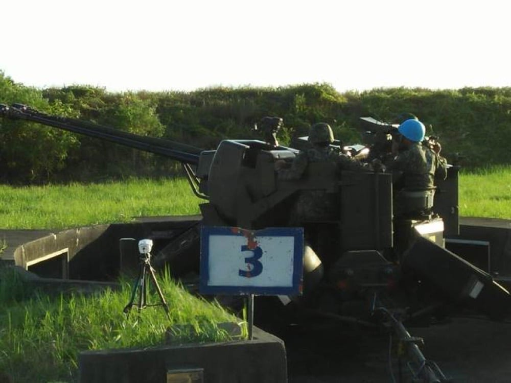
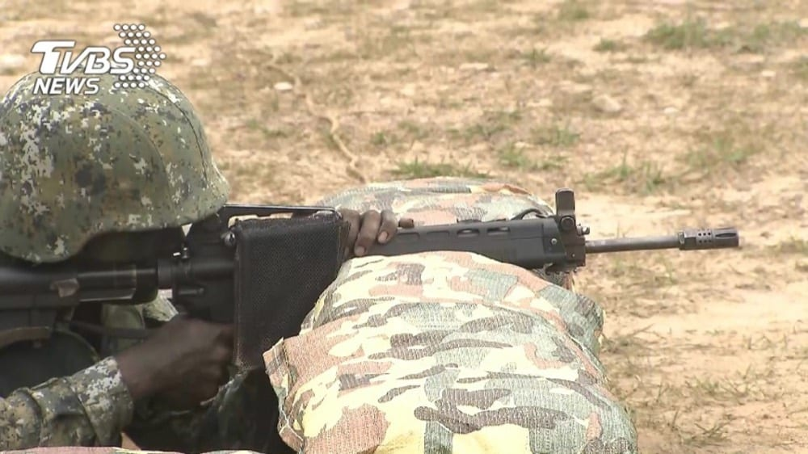

成功嶺陸軍步兵302旅兩名士兵，午餐後洗滌餐具時起了口角，進而動手鬥毆，部隊已將案件移送憲兵隊偵辦。
閱讀原文 ↗
當天早上我們班去倒垃圾，所以並沒有現場聽到班長及其他鄰兵的說法，大多是聽隔壁班中午簡短轉述後，下午班長便花了將近兩小時的時間試圖跟全連說明早上上課發生的事情，聽取各方說詞後，事件大致如下。
早上多數班級全副武裝前往單戰場操課（步行時間大約 15-20 分鐘），因當天連上幹部多有其他任務，所以僅有一位值星班長帶領全連剩餘入伍生前往（通常會有兩位班長），操課結束後，其中一位入伍生向班長反映他身體不適，因此僅能緩慢步行回連上（該生先前有氣喘紀錄，前幾週運動後或走樓梯後須使用氣喘噴劑），此時班長提出讓該生走在部隊最前面，並對部隊剩餘入伍生說明，部隊休息時間取決於該生步速。
因曾經見過該生使用氣喘噴劑情況，全連入伍生皆知曉該生患有氣喘，所以一個與該生素不相識的入伍生替該生說話，當眾質疑班長作法，並與班長爭執。回到連上後，該生於寢室哭泣。
班長知道多數入伍生對其做法頗有意見，於是在下午集合後向全體入伍生解釋，其立論主要有三：

那時候是寒流，然後下超級大雨。我們靶場要走超級遠，還要爬山到山上的靶場去打，所以基本上走在路上，全身就濕了。雖然我們有穿雨衣，但還是會濕，鞋子什麼也都會濕。
打靶的地是紅土，一下雨，紅土就直接變成一坨紅色的泥水。我們就是直接趴在紅土上拿步槍射，所以等於整個人都泡在水裡。射擊的地方又是全露天的，槍會直接架在地上，泡水又淋雨。不管是扳機還是其他地方，都可能沾到土或水，然後卡住、射不出來；覘孔也可能因為有水，沒有辦法瞄準。
我們一百四十四個人要打。那時候到底帶了多少把步槍上去，我現在有點忘記了，可能三十幾把，也可能更多。反正打到七十幾號的時候，就發現槍都壞掉了。
槍壞掉就沒辦法打，所以剩下七十幾號到一百四十四號的人，就都坐在那邊，等我們打完之後再一起下山。
那邊有一個類似風雨球場的遮雨棚，可是風很冷、雨很大，還是會一直吹進來、淋到身上。
營區的空間是固定的，但人會流動，所以可能幾年前留下來一些廢物，例如床架、連上的洗衣機，或各種雜物。這些東西本來應該要淘汰掉，但那時候就被丟在營區樹林裡面的某個地方。我不知道為什麼會被丟在那邊。
後來應該是被上面的長官知道，說東西不能丟在這裡，要丟到回收場，所以就要我們把那些東西搬到回收場。那時候很急，因為長官會定期來巡，所以操課操到一半，就叫我們三個班、幾十個人去搬東西。
結果到那邊才發現是一堆廢鐵，而且都已經生鏽了。我就問有沒有手套可以用，我說，不然這些東西生鏽，可能會有破傷風的問題。結果長官就說：「你就先搬，盡量不要受傷就好。」
我那時候就想說，三小，要不要受傷又不是我能控制的。因為他們平常很愛講，說我們最重視大家的安全，有問題一定要說，不要勉強。

我有問長官為什麼要做內務，他們說「上面的長官會看。」
有一個長官還說什麼：「麥克阿瑟說『整理內務是一切的前提』」。反正我覺得他們自己就是服從這個規則，但也沒有真的很理解為什麼要做這件事情。如果我們內務沒做好，他們就會被上面的長官盯，會覺得我們部隊沒有紀律。
內務基本上會幫你打分數，比如棉被會有一個分數，你的蚊帳會有一個分數，鋼盆怎麼擺會有一個分數，內務櫃裡面衣服怎麼掛會有一個分數，鋼盔、S腰帶怎麼擺也會有一個分數。理論上如果你沒有到一個分數，就不能放假。
但我們連上的長官平常其實也懶得打這些分數。後來有一天，他應該是突然收到通知說會有長官來，來不及幫我們打分數，所以就直接自己手寫，隨便寫分數，再貼在報告欄上面給長官看。
突然又想到，其實還有一個比較小的事情，大概是我有個鄰兵吃素，但因為各桌只會有一個湯匙同時撈滷汁（有時會有肉沫、雞絲等料）、鹹湯（通常是葷的）及甜湯，所以吃素的鄰兵很容易喝到有肉殘留的甜湯。
後來是我們去跟打飯班多拿一個湯匙解決這個問題，但後來被營長看到，說不能有兩個湯匙（打飯班有幫忙解釋是因為有吃素的鄰兵），所以就被收回了。後來我們的做法是，有長官來的時候再收起來，但其實也就那次被營長盯到，後面就沒了。
一、所有入伍生在入營前後皆經過醫院及軍醫評估，若身體狀況無法完成軍中測驗則當時便會轉往補充兵。另自己有十年帶兵經驗，照先前經驗，該生應該可完成當次路程（中間一度出現該班長疑似不知該生有氣喘，不過這屬於前任值星班長是否有完整交接問題，為另一可討論問題）。二、軍中為團體生活，不會拋下弱者。此次要求該入伍生走在部隊前方為測試，希望了解他的極限在哪裡。班長同時提到三信心（信長官、信同袍、信下屬），表示所有入伍生向他反映身體不適者，他都完全相信（不太確定他此時拋出這個說法的用意，畢竟聽起來像是他有些質疑該生身體不適之真實性）。三、該生未主動跟班長說無法行走，僅說可以慢慢走回營上。若入伍生有身體不適而不能操課，應自己提出，而非其他入伍生代為要求。
班長後來私下跟該入伍生道歉，接下來一周值星也未再有類似情況發生。
我們每個人都是全副武裝，防彈背心也全濕，整個身體都有點泡水，然後風一直吹。
後來營長有上來說，大家辛苦，知道大家很冷，也說晚上會幫大家煮薑湯或什麼，但還是要繼續打。我覺得他沒有想要解決我們當下的問題。那時候已經冷到會感冒（的程度）了，我覺得這已經變成一個健康的問題，但我的健康沒有被重視。
我覺得寒流打靶不能說它錯，因為打仗的時候可能也會有寒流，你可能還是要上戰場。我最不爽的是，有一半的人最後根本沒有打到。大家已經冷成這樣，槍也壞掉了，還是只能待在那邊等。
他們可能一定要把靶打完，是因為上面長官規定子彈數一定要消耗多少，或者每個人一定都要打過幾次，才能鑑測之類的。這些我不確定。但我那時候就是覺得很浪費時間，也很不爽，因為這已經變成一個健康問題，可是我的健康沒有被重視。
他們其實也很怕我們受傷或生病，因為對他們來說很麻煩。有人生病，就要派人送去醫院，他們根本沒有那個人力；受傷可能也要回報。
所以我就覺得很白痴。我們被叫去收這個爛攤子，他也沒有想要保護我們的意思，就只是想應付長官、把事情做完。我們就是被當工具人嘛，他要你幹嘛你就幹嘛，你也沒有決定的權利。
但我必須老實講，長官的個性其實都蠻好的，他們都是好人。我覺得他們也很為難，這是一個體系、體制的問題。他們也不是想要為難我們，他們自己可能也覺得做這些事情沒有意義，但他們就會說，這就是一個工作，就是要做。
所以我們反映的時候，他們通常也是很無奈，就說：「就這樣，我也不知道為什麼，反正就這樣，做就對了。」然後可能說，你們做完就讓你們多休息久一點，或讓你們抽一根菸、帶你們去福利站買個東西。
我們下課回走廊看到的時候，就想說：「幹，怎麼被打分數了？」結果發現一堆人的分數都很低。我們就會很緊張，因為分數很低可能就不能放假，但我們也不知道自己到底哪裡做得不好、哪裡做錯。而且有些長官說牙刷要靠左邊，有些說要靠右邊，他們自己也搞不清楚。
那時候就超莫名其妙。後來我們一直問班長：「這個到底是怎麼樣？」因為我們根本不知道自己哪裡做不好。後來他才跟大家說，因為有長官會來看，所以那個分數是他自己寫給長官看的，沒有代表什麼意義。
我們就超不爽，因為等於弄得雞飛狗跳。大家都以為自己明明有做好，卻又被認為沒做好，結果後來才發現，他只是為了應付長官。我就覺得這件事情很白痴。